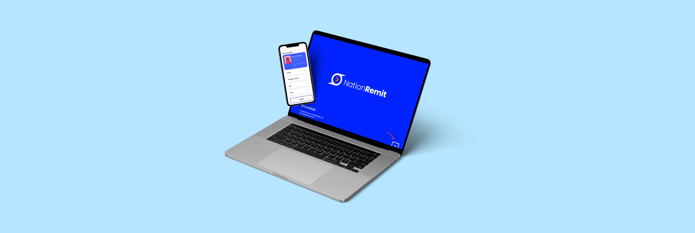
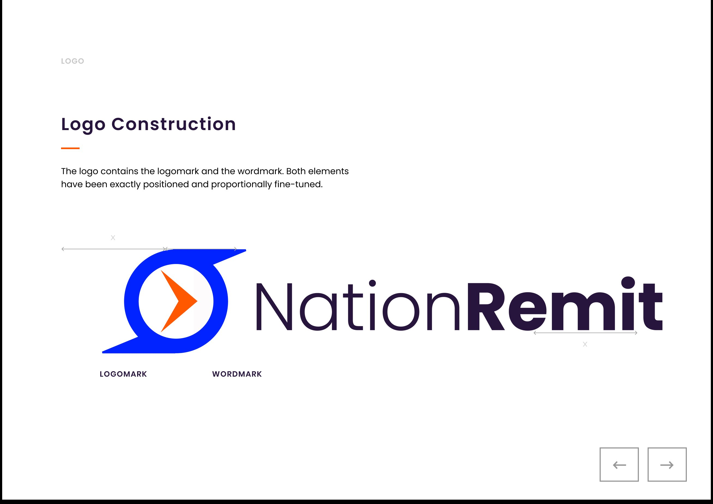
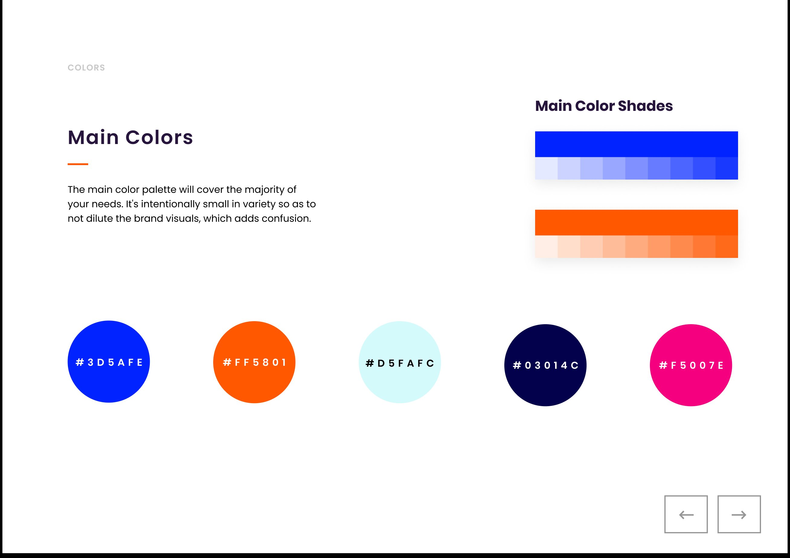
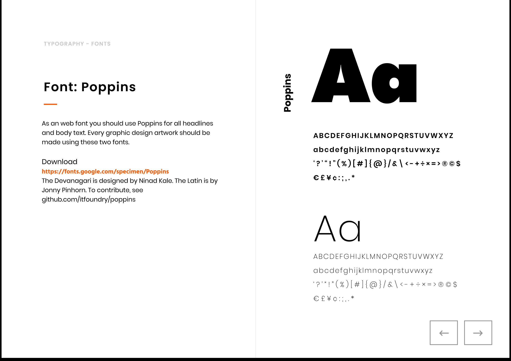
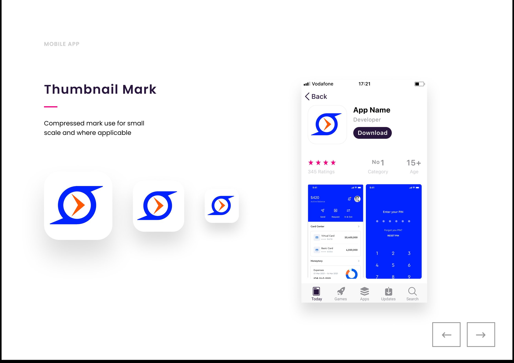
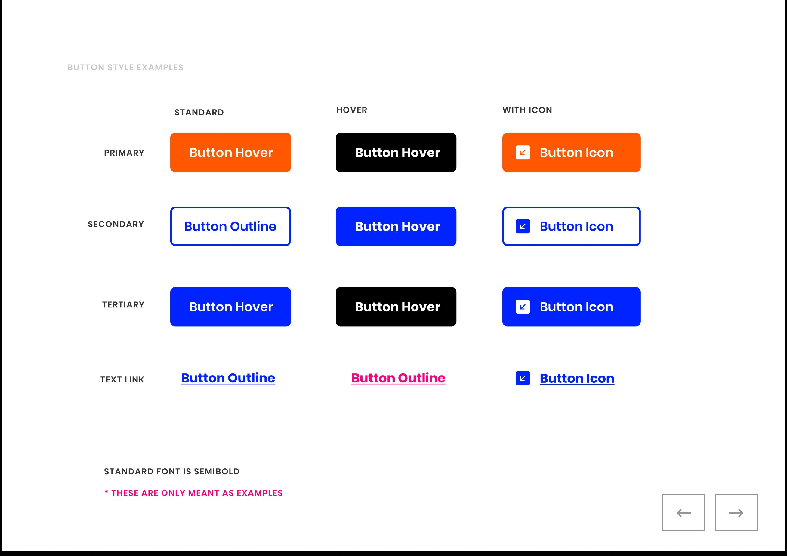

NationRemit is a global money-transfer business founded by two UK industry veterans. They came in with a product team and a clear vision — what they didn’t have was a brand. My job was to build one that earned a place on the same shelf as names that have been around for decades.

01 — Overview
Money remittance is one of the few categories where brand isn’t a tiebreaker — it’s the entire purchase decision. Customers don’t move money through an unfamiliar logo. NationRemit’s brief was to create a brand that read as fast, fair, and secure on first impression, before the user had clicked anything.
Competitive research, brand strategy, and the full identity system — logo, mark, palette, typography, photographic direction, and the brand book that documented all of it. I worked alongside a separate product team handling the website and mobile app, but the brand work itself was mine end-to-end.
Research was part of the scope because it had to be. In a trust-sensitive category, you can’t make defensible visual decisions without first knowing where the brand sits relative to the incumbents. Logo style, colour temperature, tone of voice, photo direction — every one of those calls depends on the answer to “what are we positioning against, and where do we differentiate?” A brand designer who skips that work is either guessing, or quietly inheriting someone else’s assumptions. The founders had a clear mission but no positioning artifacts, so I built them.
Fair. Fast. Secure. Those three words came from the founders’ mission statement and they were the test every brand decision had to pass. If a logo, a colour, or a tone of voice didn’t signal at least two of those three, it didn’t make it into the system.
That filter saved months of design debate — but only because the research below proved which of those three the category was already saturated with, and which still had room to be claimed.
02 — Research
Before any visual decisions, I needed to map the category. The eight dimensions below weren’t arbitrary — they came from FCA disclosure requirements, App Store category reviews, and the questions remittance customers actually ask in support forums and Trustpilot reviews. Speed, security, and affordability are the table-stakes; user experience, brand positioning, transfer methods, customer support, and digital presence are where the brands actually differentiate. Scoring all five major players across those eight let me see exactly which standard NationRemit’s strategy had to clear — and which ones the category leader, Wise, had already locked down.
| Dimension | Nation Remit strategy | Western Union | MoneyGram | PayPal / Xoom | Wise |
|---|---|---|---|---|---|
| Speed | Instant transfers via mobile wallets; quick bank transfers | Instant cash pickup; slower for bank transfers | Instant transfers, but at a higher cost | 1–2 days for international; quicker domestic | Fast in specific corridors, low fees |
| Security | Advanced encryption and secure authentication | Strong, but criticised for fraud incidents | Solid; some data-privacy concerns | Very strong; built on PayPal infrastructure | End-to-end encryption + 2FA |
| Affordability | Competitive rates with transparent fees | Higher fees, especially internationally | High in some corridors; competitive in others | Mid-range fees; often higher than specialists | Very low fees, transparent pricing |
| User experience | Seamless web and mobile, designed user-first | Functional but dated | Simple but confusing navigation | Clean and modern, limited remittance features | Clean, intuitive, efficient |
| Brand positioning | Fair, fast, secure — built on trust and simplicity | Reliable but expensive and slow | Established, but struggling to innovate | Digital payment giant, less remittance-focused | Disruptor, low-cost and transparent |
| Transfer methods | Mobile wallets, bank transfers, agent cash payouts | Cash pickup, bank, mobile wallets | Like Western Union plus online payments | Mostly bank transfers, some wallets | Bank transfers tied to local systems |
| Customer support | 24/7 multilingual, fast response | Limited to working hours in some regions | 24/7 available, but long wait times | Generally good, chat and email only | Online support; strong FAQs and community |
| Digital presence | Mobile-first website and optimised app | Website often hard to navigate | Simple but lacking advanced features | Strong app; website is secondary | Strong online presence and global reach |
03 — Strategy
A table tells you the data. A radar tells you the brief. Plotting the strategy against Wise turned eight rows of competitive notes into a single shape the founders could approve in five minutes. Wise sets the bar in money remittance — so the goal wasn’t to invent a new category, it was to design a brand that could land on the same shelf and hold its own. The strategy was built to roughly trace Wise’s strengths on the dimensions that drive customer trust, with a small lift on customer support (24/7 multilingual) and transfer methods (agent cash payouts) where the strategy had a deliberate edge. Once this shape was signed off, the brand decisions in the next three sections fell out of it almost mechanically.
Scores synthesised from the competitive audit. Strategy = the positioning the brand was designed to deliver; Wise scores reflect the audit’s assessment of the current category leader.
04 — Brand
The mark pairs an enclosed circle with a forward-pointing arrow — a closed system (security) crossed with directional flow (speed). The wordmark sits beside it in Poppins, with mixed weights to give the “Remit” half emphasis. Both elements were proportionally fine-tuned so the lockup holds at any scale, from app icon to billboard.



Five colours, intentionally restrained. Electric blue (#3D5AFE) as the primary because in remittance, blue still carries trust without reading as old-bank. Orange (#FF5801) as the warm accent for the directional element and primary calls-to-action. Navy, cyan, and a magenta accent round out the system for charts, illustrations, and tertiary moments.
Restraint was the point. A wider palette would have diluted the brand — each additional colour on a financial product is one more thing the user has to decode before deciding whether they trust you.
Poppins, set in a system that scales from headline to small-print legalese without needing a second face. Geometric sans-serif — modern enough to feel digital-first, neutral enough to disappear when the message matters more than the typography.
Open-source license, so the brand can be applied across markets and partner agencies without licensing friction.
05 — System
A brand book that stops at logo, colour, and type doesn’t survive contact with engineering. The system extended down to the component level — a compressed app-icon mark for the App Store, and a button system covering primary, secondary, tertiary, and text-link states with their hover variants.


Why systems matter
A button isn’t a brand decision; it’s a thousand brand decisions. Get the primary/secondary hierarchy wrong and every form on the site teaches users that the brand is inconsistent. Get it right and engineers can ship new screens without ever needing the designer to weigh in. The button system was the part of this engagement most likely to be used unsupervised — so it had to be self-explanatory.
06 — Application
Diverse, candid, in-the-moment imagery. The photo brief: customers sending and receiving money in real settings — ATMs, kitchen tables, coffee shops — not stock-photo studios. The result is a visual language that pairs the cool blue brand with warm, human moments. Trust through faces, not through stock illustration.
07 — Still live
NationRemit is live at nationremit.com, FCA-regulated, sending from the UK to 19+ destinations, with apps on iOS and Android. The product team has updated the website and the app multiple times since 2020 — new features, new screens, new copy — and that’s exactly what should happen with a product that’s being used.
The website has been redesigned. The app has shipped multiple new versions. New corridors, new payout methods, new UI patterns. Marketing photography has been refreshed. None of that was my work — the product and content teams own those surfaces.
That’s how it should go. A brand kit isn’t supposed to freeze a product in place; it’s supposed to give the team a stable foundation to evolve from.
The wordmark. The three-word brand promise — fast, fair, flexible sits in their footer today, the same rhythm as the original fair, fast, secure. The transparency-first positioning that came out of the eight-dimension audit. The strategic decision to compete on trust rather than disruption.
The visual language has evolved with the product. The strategic foundation hasn’t. That’s the part of brand work that has to outlast you — the research-driven decisions that explain why, so the next designer or marketer or PM can keep building on them without having to relitigate the brief.
Verification — visit nationremit.com or download the NationRemit app on the App Store / Google Play.
08 — Takeaway
The thing that made NationRemit’s brand land wasn’t the logo or the palette — those were downstream of the eight-dimension audit that defined what the brand had to stand for. Without the research, this was just another blue-and-orange fintech mark. With the research, every decision had a defensible answer to “why this?” — and that’s the part that survives the work being handed off, redesigned, or rebuilt years later.
What I’d carry forward
Brand identity work in regulated, trust-sensitive categories — fintech, healthcare, insurance — is fundamentally a positioning problem dressed up as a visual one. The visual system is just the most visible artifact. When the category already has a clear leader, the brief isn’t to invent a new category — it’s to earn a place on the same shelf. Match the standard the leader has set, and find the small, specific dimensions where you can offer something they don’t. That’s how new entrants become staples.
Next case study